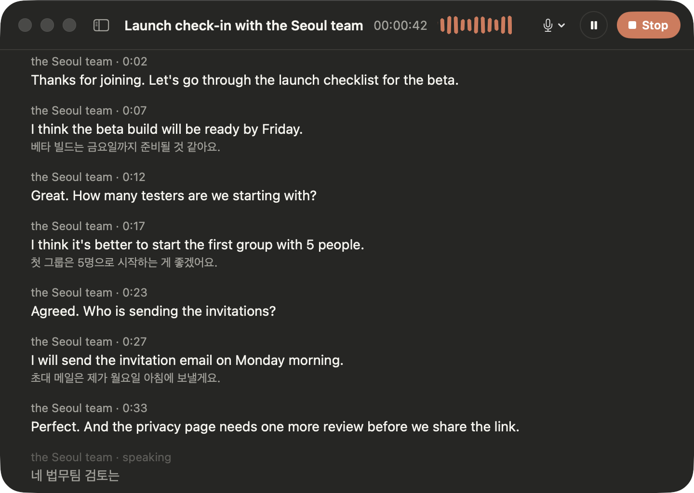
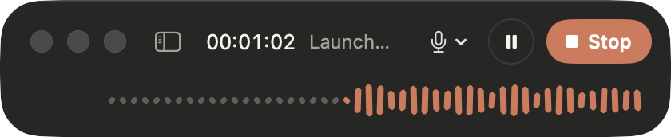
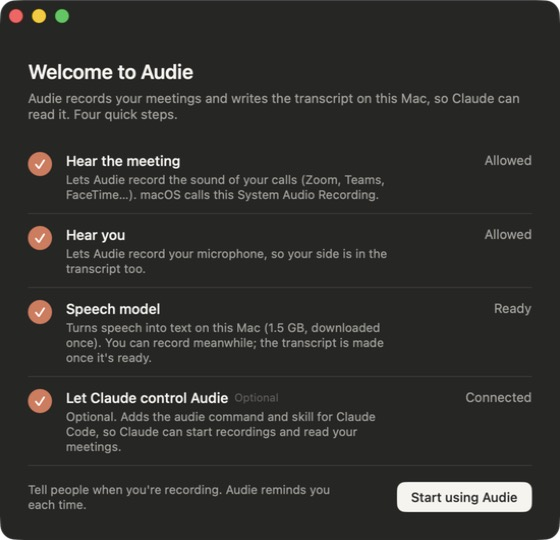

Every meeting, written down live.
Audie records the call on your Mac and turns it into text as people speak. Claude can read every word.

A real recording. Gray words are still being spoken. They turn white when the sentence ends.
No bot joins the call.
Audie listens to what your Mac plays and to your microphone. Zoom, Teams, Meet, FaceTime. Nobody new in the participant list.
2secuntil the first words appear on screen
0bots, screen recordings, or accounts
100%of the audio stays on your Mac
Words appear as they're said.
You see the first words about two seconds after someone starts talking. When they finish the sentence, it settles into the transcript.
the Seoul team · 0:12Great. How many testers are we starting with?
the Seoul team · 0:33Perfect. And the privacy page needs one more review before we share the link.
Small while you talk.
During a call Audie is a slim bar with a timer and a sound wave. Open the full window when you want to read along.

Ask Claude what was said.
Claude can start a recording and read the transcript, even while the meeting is still going.
Who's doing what after this call?
ClaudeThe Seoul team has the beta build ready by Friday and sends the tester invitations Monday morning. Legal reviews the privacy page by Wednesday. You're sending a summary after the call.
Works with Claude Code in one click. Without it, Open in Claude copies the transcript for you.
Your Mac. Your files.
No account and no Audie server. Recordings are ordinary files in a folder on your Mac. Transcript text goes to Anthropic only when you ask Claude to read it.
Ready in a minute.
Download and drag to Applications.Signed by the developer and checked by Apple.
Allow the two permissions.A short guide walks you through System Audio Recording and the Microphone.
Let the speech model download.1.5 GB, once. You can record while it downloads.
Connect Claude, if you like.Optional. After this, Audie keeps itself up to date.

Questions.
Which Macs does it run on?
Macs with Apple silicon (M1 or later) on macOS 14.2 or later, with about 2 GB free.
Do I need to tell people I'm recording?
Yes. Many places require everyone's consent, and your workplace may have its own rules. Audie reminds you every time you start.
Which languages does it understand?
English, Korean, and a mix of the two in the same meeting.
What does it cost?
Nothing. Audie is free while it's tested with a small group.
My work network blocked the speech model.
Email David for the model file, then use Settings › Speech › Import.